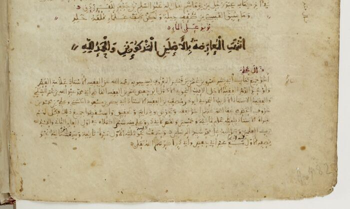

المخطوط 1 من 5
كتاب سيبويه بخط ابن خروف
«الكتاب» لسيبويه في نسخة النحوي الإشبيلي أبي الحسن ابن خروف، كتبها لنفسه وقابلها بالأصل.
- المكتبة
- المكتبة الوطنية الفرنسية، باريس
- رقم الحفظ
- Arabe 6499
- التاريخ
- 562هـ / 1166–1167م
- مكان النسخ
- إشبيلية على الأرجح (حرد المتن، الورقة 164ظ)
- الخط
- أندلسي علمي دقيق، والعنوان بخط أندلسي جليل
- الحامل
- كراريس ورق تتخللها أوراق من الرَّق
- الأوراق والمقاس
- 165 ورقة · 23 × 16.9 سم
- النسخة الرقمية
- ملونة كاملة، 343 صورة
المخطوط
نسخة شبه كاملة من «الكتاب» كتبها ابن خروف بيده لاستعماله الخاص، ثم قابلها بأصلها، وفي آخرها بخط جليل: «انتهت المعارضة بالأصل». تزدحم صفحة العنوان وهوامشها بقيود وتعليقات لاحقة، واضطرب ترتيب بعض الكراريس عند التجليد، وفيها خروم يسيرة.
المؤلف والناسخ
سيبويه، أبو بشر عمرو بن عثمان بن قنبر (ت. نحو 180هـ/796م)، إمام نحاة البصرة، وكتابه أول مصنَّف جامع في نحو العربية، حتى سمّاه النحاة «قرآن النحو». وكان يُقرأ في الأندلس بالرواية والإسناد كما تُقرأ كتب الحديث.
أما الناسخ فأبو الحسن علي بن محمد بن خروف الإشبيلي (ت. 609هـ/1212م)، من أعلام النحو في إشبيلية، أخذ عن ابن طاهر الخِدَبّ، وشرح الكتاب في «تنقيح الألباب في شرح غوامض الكتاب»، وشرح «جُمل» الزجاجي.
قصة النسخة
دخلت المكتبة الوطنية الفرنسية سنة 1910، ودرستها جنفييف أومبير في بحثها عن طرق رواية كتاب سيبويه (لايدن 1995)، وعُرضت في معرض «فن الكتاب العربي» بباريس سنة 2001.
الأهمية
قليلاً ما تصلنا نسخة من القرن السادس الهجري بخط عالم كبير. هذه شاهد مباشر على ورشة النحو الأندلسي: نص يُنسخ ويُقابل ويُصحَّح بيد رجل سيكتب عليه شرحاً بعد ذلك. وقد كُتبت في السنة التي يُذكر أن الشلوبين وُلد فيها، وهو وارث مدرسة إشبيلية وصاحب المخطوط الرابع في هذا الفهرس.
